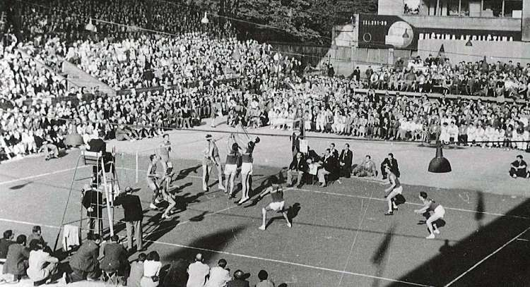

Asal Usul Bola Voli
Bola voli memiliki sejarah yang panjang dan menarik. Olahraga ini diciptakan pada tahun 1895 oleh William G. Morgan, seorang instruktur pendidikan jasmani di Young Men's Christian Association (YMCA) di Holyoke, Massachusetts, Amerika Serikat.
Morgan menciptakan permainan ini sebagai alternatif yang kurang fisik dibandingkan dengan bola basket yang telah diciptakan empat tahun sebelumnya. Awalnya, permainan ini disebut "Mintonette" sebelum akhirnya diganti menjadi "volleyball" (bola voli) yang lebih menggambarkan cara permainan ini dimainkan.
Perkembangan Bola Voli
Diciptakan oleh William G. Morgan
Morgan menciptakan Mintonette sebagai permainan indoor untuk anggota YMCA yang menginginkan olahraga yang kurang fisik daripada bola basket.
Pertunjukan Pertama
Pertunjukan pertama voli dilakukan di International YMCA Training School. Nama permainan diubah dari Mintonette menjadi Volleyball.
Perkembangan di Filipina
Filipina mengembangkan "bomb" atau spike, dan sistem tiga pukulan mulai diterapkan.
Berdirinya FIVB
Fédération Internationale de Volleyball (FIVB) didirikan untuk mengatur olahraga voli secara internasional.
Olimpiade Pertama
Voli resmi menjadi bagian dari Olimpiade Tokyo, menandai pengakuan internasional terhadap olahraga ini.
Sejak itu, bola voli terus berkembang dan menjadi olahraga populer di seluruh dunia, dengan berbagai variasi seperti voli pantai yang juga menjadi cabang olahraga Olimpiade.
Kembali ke halaman utama atau pelajari teknik dasar bola voli.